용접기사 (2004-03-07 기출문제)
1과목: 기계제작법
1. 단조완료 온도는 어느 정도로 하는가?
- 재결정온도 보다 약간 높게 한다.
- A1 변태점보다 약간 높게 한다.
- A3 변태점보다 약간 높게 한다.
- 청열취성 온도보다 약간 높게 한다.
(정답률: 알수없음)

2. 분할대로서 5등분하려면 분할 크랭크의 회전수를 얼마로 하면 되는가? (다만, 웜기어비는 40:1이고, 신시나티형(型)이다.)
- 7
- 8
- 9
- 10
(정답률: 64%)
3. 선반의 크기를 정하는 규격이 아닌 것은?
- 베드위의 스윙
- 왕복대위의 스윙
- 베드의 높이
- 양쎈터 사이의 최대 거리
(정답률: 알수없음)
4. 펀치와 다이의 시어각(shear angle)에 관한 설명 중 옳은 것은?
- 두꺼운 판을 가공하고 펀칭력을 감소시키기 위하여 다이 나 펀치 날끝선에 경사를 붙인 것이 시어각이다.
- 피어싱에는 다이에, 블랭킹에는 펀치에 시어각을 붙인다.
- 모든 펀치에는 시어각을 두어 펀칭에서 힘을 감소시키는 것이 좋다.
- 다이에 시어각을 두면 다이의 수명이 연장되고 동력이 적게 들고 가공치수가 정확하다.
(정답률: 알수없음)
5. 공작물의 수가 적은 경우, 납등을 이용하여 전기, 가스로 가열 용융시켜 절삭공구의 뜨임에 많이 이용되는 방법은
- 노중 냉각에 의한 방법
- 열욕 (熱浴)에 의한 방법
- 유자 (油煮)에 의한 방법
- 템퍼링 색깔을 응용하는 방법
(정답률: 알수없음)
6. 그림과 같이 접합할 모재의 한쪽에 긴 구멍을 뚫고, 판의 표면까지 가득히 용접하여 다른 모재와 접합하는 용접은
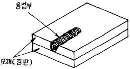
- 맞대기 용접
- 겹치기 용접
- 덮개판 용접
- 플러그 용접
(정답률: 알수없음)
7. 전해연마의 특징으로 틀린 것은?
- 가공면에는 방향성이 있다.
- 복잡한 형상의 공작물, 선 등의 연마도 가능하다.
- 내마멸성, 내부식성이 좋아진다.
- 면이 깨끗하고 도금이 잘 된다.
(정답률: 알수없음)
8. 기계공작에서 각도측정에 사용되는 측정기는?
- 옵티컬 플랫(optical flat)
- 레벨(level)
- 광학 평면검사기
- 조도계(roughness indicator)
(정답률: 알수없음)
9. 덧쇳물(riser,feeder)의 역할로서 옳지 않은 것은?
- 균열이 생기는 것을 방지한다.
- 주형내의 불순물과 용제의 일부를 밖으로 배출한다.
- 주형내의 쇳물에 압력을 준다.
- 금속이 응고할 때 수축으로 인한 쇳물 부족을 보충한다.
(정답률: 알수없음)
10. 표면경화의 효과를 얻기 위한 방법들 중 잘못된 것은?
- 화염경화염
- 탈탄법
- 질화법
- 청화법(시안화법)
(정답률: 알수없음)
11. 소성가공에서 열간가공과 냉간가공 구별의 기준온도는?
- 담금질 온도
- 재결정온도
- 변태온도
- 단조온도
(정답률: 알수없음)
12. 디프 드로잉가공(deep drawing)의 설명 중 틀린 것은?
- 다이의 모서리 둥글기 반지름이 크면 주름이 쉽게 나타나지 않는다.
- 드로잉 작업이 진행되는 동안 소재 누름판으로 다이상면에 접하고 있는 소재를 눌러 주어야 한다.
- 펀치와 다이 사이의 간극은 재료 두께와 다이 벽과의 마찰을 피하기 위한 간극과를 합한 것이다.
- 다이 모서리의 반지름이 작으면 모서리 부분에 터짐이 나타나기 쉽다.
(정답률: 알수없음)
13. 둥근날 바이트로 선삭할 때 가공면의 이론적 표면 거칠기는 다음 어느 것으로 나타낼 수 있는가? (단, f는 이송, R는 공구의 날끝 반지름이다.)
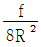
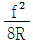
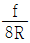
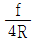
(정답률: 알수없음)
14. 주물의 정밀도가 높고 표면이 깨끗하며 다량생산이 가능하고 오직 비철 금속의 주조에만 한정되는 것은?
- 셀 몰드 주조법
- 칠드 주조법
- 다이케스팅법
- 원심 주조법
(정답률: 알수없음)
15. 빌트업에지(built-up edge)를 작게하는 설명으로 옳은 것은?
- 공구 윗면 경사각을 작게한다.
- 마찰계수가 큰 절삭공구를 사용한다.
- 저속으로 절삭한다.
- 칩의 두께를 감소시킨다.
(정답률: 알수없음)
16. 평면도를 측정하는 데에, 상관이 없는 측정 기구는?
- 수준기
- 광선정반
- 오토콜리메이터
- 공구현미경
(정답률: 알수없음)
17. 다이얼게이지(dial gage)의 특성이 아닌 것은?
- 측정범위가 비교적 넓다.
- 다원 측정이 가능하다.
- 시차가 적다.
- 직접 측정에 적합하다.
(정답률: 알수없음)
18. 불활성가스를 사용하는 용접은?
- 스폿(SPOT)용접
- 미그(MIG)용접
- 스텃(STUD)용접
- 텔밋(THERMIT)용접
(정답률: 알수없음)
19. 원통내면의 정밀 다듬질의 일종이고 혼(hone)이라 부르는 각봉상 세입자로 만든 공구를 회전과 왕복운동을 시켜 공작물의 원통내면을 유압 또는 스프링으로 압력을 주어 가공하는 가공법은?
- 호닝
- 슈퍼피니싱
- 래핑
- 방전가공
(정답률: 알수없음)
20. 연질금속을 다이에 넣고 펀치에 큰 힘을 가함으로서 튜브, 건전지 케이스(case)나 약품등의 용기를 제작하는 압출은?
- 직접 압출
- 간접 압출
- 열간 압출
- 충격 압출
(정답률: 알수없음)
2과목: 재료역학
21. 아래 그림에서와 같이 단붙이 원형축(Stepped Circular Shaft)의 풀리에 토크가 작용하여 평형상태에 있다. 이 축에 발생하는 최대 전단응력은 몇 MPa 인가?
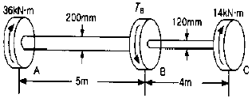
- 18.2
- 22.9
- 41.3
- 52.4
(정답률: 알수없음)
22. 단면 20cm x 30cm, 길이 6m의 목재로된 단순보의 중앙에 20 kN의 집중하중의 작용할 때, 최대 처짐(δ max)은? (단, 탄성계수 E = 10 GPa 이다.)
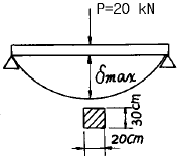
- 1.8㎝
- 2.0㎝
- 1.5㎝
- 2.4㎝
(정답률: 알수없음)
23. 양단이 단순지지된 길이 2m인 보에 균일분포 하중 w = 800 kN/m가 작용할 때 최대 처짐각은? (단, 보 단면의 관성모멘트는 I = 500x106 mm4이고, 탄성계수는 E = 200 GPa이다.)
- 0.034°
- 0.153°
- 0.278°
- 0.361°
(정답률: 알수없음)
24. 그림과 같은 보의 지점 반력 RA, RB 는?
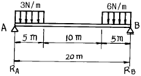
- RA = 9.4 N, RB = 35.6 N
- RA = 10.1 N, RB = 34.9 N
- RA = 15.4 N, RB = 29.6 N
- RA = 16.9 N, RB = 28.1 N
(정답률: 알수없음)
25. 외경이 내경의 1.5배인 중공축과 재질과 길이가 같고 지름이 중공축의 외경과 같은 중실축이 동일 회전수에 동일 마력을 전달한다면, 이때 중실축에 대한 중공축의 비틀림각의 비는 어느 것인가?
- 1.25
- 1.50
- 1.75
- 2.00
(정답률: 알수없음)
26. 한가지 재료(탄성계수 E)로 된 그림과 같은 원형 단면의 봉이 온도 t에서 to로 강하 되었을 때 ①의 부분과 ②의 부분의 응력의 비로 맞는 것은? (단, d1 = 1.41d2 이고, 선팽창 계수는 α 이다.)
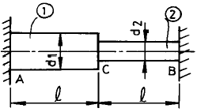
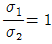
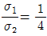
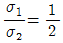
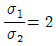
(정답률: 알수없음)
27. 다음과 같이 양단을 고정한 길이 ℓ , 단면적 A의 막대를 ΔT 만큼 온도를 올렸을때 막대에 생기는 응력 σ는? (단, 막대의 탄성계수를 E, 선팽창 계수를 α라 한다.)
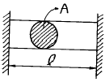
- σ = -Eα ΔT
- σ = -Eα2ΔTA
- σ = -EαΔTℓ
- σ = -EαΔTℓ2
(정답률: 알수없음)
28. 그림과 같이 단면의 치수가 8 mm x 24 mm인 강대가 인장력 P = 15 kN을 받고 있다. 그림과 같이 30° 경사진면에 작용하는 전단응력은 몇 MPa 인가?
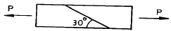
- 19.5
- 29.3
- 33.8
- 67.6
(정답률: 알수없음)
29. 단면적이 5 cm2, 길이가 60 cm인 연강봉을 천장에 매달고 20 ℃에서 0 ℃로 냉각시킬때 길이의 변화를 없게하려면 봉의 끝에 몇 kN의 추를 달아 주어야 하는가? (단, E = 200 GPa, α = 12x10-6/℃, 봉의 자중은 무시)
- 60
- 36
- 30
- 24
(정답률: 알수없음)
30. 동일재료로 만든 동일한 굽힘강도의 정사각형 단면보와 원형 단면보의 단면적비, 즉 정사각형 단면적/원형 단면적의 값은 얼마인가?
- 0.89
- 0.98
- 1.8
- 0.64
(정답률: 알수없음)
31. 최대 사용강도(σmax) = 240 MPa, 직경 1.5 m, 두께 3 ㎜의 강재 원통형 용기가 견딜 수 있는 압력은 몇 kPa 인가? (단, 안전계수(Sf)는 2이다.)
- 240
- 480
- 960
- 1920
(정답률: 알수없음)
32. σx= 500 Pa, σy= 300 Pa, τxy= 100 Pa인 그림과 같은 요소내에 발생하는 최대 주응력의 크기는 몇 Pa 인가?
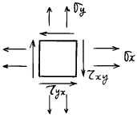
- 341
- 441
- 541
- 641
(정답률: 알수없음)
33. 그림과 같은 단주(短注)에서 편심 거리 e = 2 mm에 하중 P = 1 MN의 압축하중이 작용할 때 발생하는 최대응력은 몇 MPa인가?
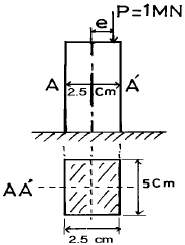
- 975
- 998
- 1027
- 1184
(정답률: 알수없음)
34. 재료가 축방향 하중을 받아 선형 탄성적으로 거동할 때 변형 에너지밀도(strain-energy density)를 구하는 식이 아닌 것은? (단, σ : 응력, ε: 변형률, E : 탄성계수)
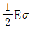
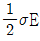
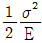
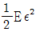
(정답률: 알수없음)
35. 3200 Nㆍm의 비틀림모멘트를 받는 둥근축이 있다. 이 축의 허용 전단응력을 60 MPa이라 하면 축의 지름은 최소 몇 cm로 해야 하는가?
- 4.06
- 6.48
- 8.16
- 10.28
(정답률: 알수없음)
36. 길이 240cm, 단면의 폭x높이 = 12cmx15cm의 단순보가 ω kN/m의 균일분포하중을 받고 있다. 이보의 허용굽힘응력 σa = 48 MPa일 때 허용할 수 있는 분포하중의 최대값은?
- 80
- 30
- 40
- 60
(정답률: 알수없음)
37. 다음 그림과 같이 균일분포 하중(ω)을 받는 고정지지보에서 최대 처짐 δmax는 얼마 정도인가? (단, ℓ 은 고정지지보의 길이, E는 탄성계수(N/m2) Ⅰ는 단면 2차모멘트(m4)이다.)
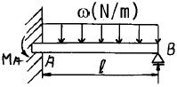
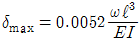
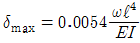
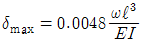
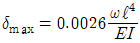
(정답률: 알수없음)
38. 탄성계수 E, 전단탄성계수 G, 프와송 비 μ사이의 관계식 중 옳은 것은?
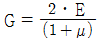
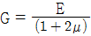
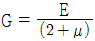
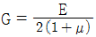
(정답률: 알수없음)
39. 직경 d인 원형단면의 원주에 접하는 축에 관한 단면 2차 모멘트는?
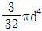
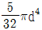
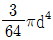
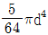
(정답률: 알수없음)
40. 한 점에서의 미소요소가 εx = 340x10-6, εy = 110x10-6, γxy = 180x10-6 인 평면 변형률을 받을 때 이 점에서의 주 변형률은?
- 521x10-6
- 437x10-6
- 371x10-6
- 146x10-6
(정답률: 알수없음)
3과목: 용접야금
41. 다음 중 변형시효에 가장 큰 영향을 미치는 것은?
- H2
- CO2
- O2
- CH4
(정답률: 알수없음)
42. 다음 금속 중에서 선팽창 계수가 가장 큰 금속은?
- 알루미늄
- 주철
- 18Cr-8Ni 스테인리스강
- 인바
(정답률: 알수없음)
43. X-ray 회절 시험으로 알아 낼 수 없는 것은?
- 격자정수
- 결정격자형
- 유닛 쎌(Unit cell)의 원자배치
- 결정의 스립(slip)변형량
(정답률: 알수없음)
44. 금속강화법에 가장 해당치 않다고 생각되는 것은?
- 합금원소의 고용강화
- 가공에의한 경화
- 열처리에 의한 강화
- 용융에 의한 강화
(정답률: 알수없음)
45. 변태속도론에 미치는 합금원소의 영향중 오스테나이트를 안정화 시키는데 효과가 가장 큰 원소는?
- Zn
- Cu
- Ni
- C
(정답률: 알수없음)
46. 주조시 주형에 냉금을 삽입하여 주물 표면을 급냉시키고 경도를 증가시킨 내마모성 주철은?
- 칠드주철
- 가단주철
- 구상흑연주철
- 흑심가단주철
(정답률: 알수없음)
47. HAZ의 재질을 향상시키기 위하여 흔히 취하는 옳은 방법은?
- 특수한 용가재 사용
- 용접부 피닝
- 용접부 냉각속도 감소
- 용접부 예열과 후열
(정답률: 알수없음)
48. 상온에서 순철(Fe)의 결정 격자는?
- 면심입방격자이다
- 체심입방격자이다
- 조밀육방격자이다
- 체심정방격자이다
(정답률: 알수없음)
49. 티그 용접용 와이어 및 봉의 흡습방지 관리사항과 가장 거리가 먼 것은?
- 습도가 낮고 통풍이 좋은 곳에 보관한다.
- 유해가스의 발생원인으로부터 먼 곳에 설치한다.
- 지면과 벽에 밀착하여 설치하여야 한다.
- 재고품은 장시간 체류되지 않게 하여야 한다.
(정답률: 알수없음)
50. 일반 탄소강에서 탄소 함량의 증가가 기계적 성질에 미치는 영향이 아닌 것은?
- 경도를 높인다.
- 인장 강도를 높인다.
- 인성을 낮춘다.
- 용접성을 향상 시킨다.
(정답률: 알수없음)
51. 동일 용접입열에 비하여 판두께가 두꺼울수록 냉각속도는 어떻게 되는가?
- 냉각속도는 빨라진다.
- 냉각속도는 빨라지다가 느려진다.
- 냉각속도는 느려진다.
- 변화하지 않는다.
(정답률: 알수없음)
52. 피복 아크용접에서 용접전류가 260[Ampere]이고 용접전압이 40[Volt] 이고 용접속도가 10[cm/min] 일때 용접입열은 얼마인가?
- 62400 [J/cm]
- 10400 [J/cm]
- 6500 [J/cm]
- 153800 [J/cm]
(정답률: 알수없음)
53. 고장력강재 열영향부의 최대 경도는 판두께가 (㉠)수록 또한 용접 입열량이 (㉡)수록 커진다. ( )안에 알맞는 말은?
- ㉠두꺼울, ㉡작을
- ㉠엷을, ㉡클
- ㉠두꺼울, ㉡클
- ㉠엷을, ㉡작을
(정답률: 알수없음)
54. 다음 그림은 용접부 조직을 나타낸 것이다. 옳게 짝지어진 것은?
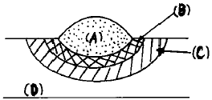
- (A) 용접금속, (B) 본드, (C) 열영향부, (D) 모재
- (A) 열영향부, (B) 용접금속, (C) 본드, (D) 모재
- (A) 본드, (B) 열영향부, (C) 용접금속, (D) 모재
- (A) 용접금속, (B) 열영향부, (C) 본드, (D) 모재
(정답률: 알수없음)
55. 18Cr-8Ni 스테인리스강에서 입간 부식을 방지하는 것으로 틀린 것은?
- 풀림 처리와 같은 열처리를 한다.
- 용체화 처리를 한다.
- δ 철의 형성 원소를 첨가한다.
- 탄화물의 안정화 원소를 첨가한다.
(정답률: 알수없음)
56. 고장력강의 노치인성을 증대시키는 합금원소는?
- 구리(Cu)
- 바나듐(V)
- 몰리브덴(Mo)
- 니켈(Ni)
(정답률: 알수없음)
57. 용접상태에서 응고할 때 그 응고 온도차에 따라 농도의 차를 일으키는 현상을 무엇이라고 하는가?
- 포정
- 포석
- 편석
- 편정
(정답률: 알수없음)
58. 다음 중 경도가 가장 낮은 것은?
- α-철
- γ-철
- 펄라이트(Pearlite)
- 마텐사이트(Martensite)
(정답률: 알수없음)
59. 다음 용접후 나타날수 있는 용접부의 조직중 충격인성이 가장 양호한 조직은?
- 마텐자이트
- 상부 베이나이트
- 마텐자이트 + 하부베이나이트
- 페라이트 + 펄라이트
(정답률: 알수없음)
60. 다음 중 용융철 중에 가장 용해도가 큰 기체는?
- 산소
- 질소
- 수소
- 알곤
(정답률: 알수없음)
4과목: 용접구조설계
61. 용접시공시 최초층의 온도는 통상 아래 어느 온도와 비슷한가?
- 예열온도
- 후열온도
- 용접입열
- 냉각온도
(정답률: 알수없음)
62. 그림과 같은 굽힘을 받는 용접부 선형의 중립축XX에 대한 단면 2차 모멘트로 가장 적합한 것은? (단, 용접두께를 t = 1로 보고 계산한 식이다.)
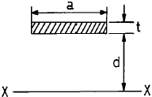
- ad2
- 2d2
- 2ad2
- d2
(정답률: 알수없음)
63. 용접부 피로시험에서 피로한도는 어느 정도이어야 하는가?
- 2 x 102회
- 2 x 103회
- 2 x 105회
- 2 x 106회
(정답률: 알수없음)
64. 용접봉의 소요량에서 용접봉의 가격을 올바르게 나타낸 식은?
- 용착율 x 용접봉 단가
- 사용율 x 용접봉 단가
- 용접봉 사용량 × 용접봉 단가
- 용접봉 사용율 x 용착율 x 용접봉 단가
(정답률: 알수없음)
65. 다음 그림은 어떤 형식의 용접 이음인가?
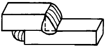
- 맞대기 용접이음
- 겹치기 용접이음
- T형 용접이음
- 십자형 용접이음
(정답률: 알수없음)
66. 용접에서 다음 설명중 옳지 못한 것은?
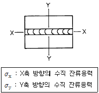
- 판의 중앙부에서 σx는 인장응력이다.
- 판의 중앙부에서 σx는 압축응력이다.
- σx의 Y축상에서의 변화에서 압축이 될때도 있다.
- σx의 Y축상의 판끝 부분에서의 값은 미미하다.
(정답률: 알수없음)
67. 다리길이(각장)가 같은 필릿용접에서 다리길이가 3배 증가하면 용착량은 어떻게 되나?
- 2배 증가
- 3배 증가
- 9배 증가
- 6배 증가
(정답률: 알수없음)
68. 다층 용접에서 변형균열 특히 열영향부의 라미나티어가 대상이 되는 균열 시험법은?
- 크랜휘일드 시험
- TRC 시험
- RRC 시험
- 피스코 시험
(정답률: 알수없음)
69. 용접이음 효율(η)을 나타내는 것은?
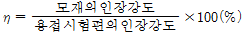
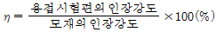
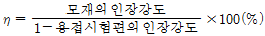
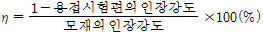
(정답률: 알수없음)
70. 다음 중 용접 결함이 아닌 것은?
- toe crack
- slag 혼입
- blow hole
- segregation
(정답률: 알수없음)
71. 용접하여 H형 보(H beam)를 만들 때 그림에서 보는 바와 같이 절단하여 짝맞춤으로서 웨브(web)의 깊이를 증가시키는 수가 있다. 그 첫째 이유는?
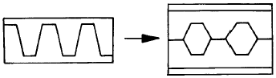
- 재료절약과 2차 관성 모우멘트의 증가
- 재료절약과 전단강도의 증가
- 좌굴 강도의 증가
- 피로 강도의 증가
(정답률: 알수없음)
72. 그림과 같은 V형 맞대기 용접에서 인장력 P = 3000㎏f의 하중이 작용하였다면 인장응력(σ)은 얼마인가?
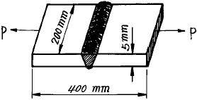
- 1kgf/㎜2
- 3kgf/㎜2
- 5kgf/㎜2
- 7kgf/㎜2
(정답률: 알수없음)
73. 용접시의 판상의 온도분포에 대한 설명 중 틀린 것은?
- 용접열원 부근의 온도는 대단히 높다.
- 열원에서 멀어질 수록 온도는 낮아지고 있다.
- 열원후방 부근에서는 온도구배가 완만하다.
- 열원전방 부근에서는 온도구배가 완만하다.
(정답률: 알수없음)
74. 고장력강의 용접결함 중 저온균열이 생기는 직접적인 원인이 아닌 것은?
- 용접부의 경화
- 용접 중 발생하는 수소
- 내열 피로특성
- 구조물에 있어서의 구속도
(정답률: 알수없음)
75. 한끝에서 다른쪽 한끝을 향하여 연속적으로 진행하는 용착법으로 변형과 잔류응력이 그다지 문제가 되지 않을 때 이용되는 것은?
- 전진법(progressive method)
- 후퇴법(backstep method)
- 대칭법(symmetric method)
- 비석법(skip method)
(정답률: 알수없음)
76. 용접 작업시간을 구하는 식으로 적당한 것은?
- 용접 작업시간 = [아크시간/8]
- 용접작업시간 = [8/아크시간]
- 용접작업시간 = [아크시간률/아크시간]
- 용접작업시간 = [아크시간/아크시간률]
(정답률: 알수없음)
77. 그림과 같은 맞대기 용접부의 목두께는?
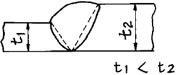
- t2
- t1
- t2 - t1
- t2 - 2t1
(정답률: 알수없음)
78. 평면 맞대기 용접이음에서 최대굽힘 응력은? (단,용접이음은 완전용입이며,굽힘 모멘트는 5000㎏fㆍ㎝, 판두께는 20㎜, 판폭은 300㎜이다.)
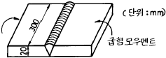
- 1.2 kgf/㎝2
- 250 kgf/㎝2
- 2800 kgf/㎝2
- 333 kgf/㎝2
(정답률: 알수없음)
79. 용접변형을 경감하기 위한 용접법중 비석법을 바르게 설명한 것은?
- 두꺼운 판을 용접할 때 층을 쌓아 올리면서 용접하는 방법
- 용접부에 물을 적신 석면, 천 등을 올려놓고 용접하는 방법
- 용접선이 길 경우에 용접비드를 건너 뛰어서 놓은 방법
- 모재의 보다 찬 부분을 선택하여 비드를 놓는 방법
(정답률: 알수없음)
80. 용접후에 발생하는 수축응력이 구조물의 응력 흡수 능력에 부정적인 영향을 미치지 않게 하기 위해서는 어떤 조건이 만족되어야 하는가?
- 두꺼운 재료 사용
- 소성변형능력이 큰 재료 사용
- 대결정입 재료 사용
- 급냉에 의한 경화 재료 사용
(정답률: 알수없음)
5과목: 용접일반 및 안전관리
81. 가스절단에서 절단속도에 영향을 미치지 않는 것은?
- 산소압력
- 모재의 온도
- 팁의 형상
- 예열 불꽃의 크기
(정답률: 알수없음)
82. 플라즈마(plasma) 용접에 관한 설명들 중 바르지 못한 것은?
- 핀치효과(pinch effect)에 의해 열에너지의 집중이 좋으므로 용입이 깊고 비드폭이 좁고 용접속도가 빠르다.
- 키이홀(key hole)이 클수록 양호한 용접결과를 얻을 수 있다.
- 아주 얇은 모재의 용접이나 덧붙이 용접, 납땜에도 이용된다.
- 용접부가 대기로 부터 보호되므로 용접부의 야금적 기계적 성질이 양호하며 변형도 적다.
(정답률: 알수없음)
83. 전기 아크 빛에 의하여 눈에 가벼운 염증이 있는 경우의 응급조치로 가장 적당한 것은?
- 비눗물로 찜질한다.
- 찬물로 찜질한다.
- 그리스를 눈주위에 바른다.
- 안과 병원으로 간다.
(정답률: 알수없음)
84. 이산화탄소 아크 용접법의 특징을 설명한 것 중 틀린 것은?
- 값싼 이산화탄소를 사용할 수 있으며 자동 반자동의 고속 용접이 가능하다.
- 용입이 깊다.
- 모재표면의 거칠기가 비교적 둔감하다.
- 불가시 아크이므로 용융지를 살필 수 없어 시공이 불편하다.
(정답률: 알수없음)
85. 산소 아세틸렌 용접에서 작업이 끝난 후 뒷처리 하는 과정에서 제일 첫번째 해야 할 단계는?
- 토치의 아세틸렌 밸브를 잠근다.
- 토치의 산소 밸브를 잠근다.
- 아세틸렌병의 밸브를 잠근다.
- 산소병의 밸브를 잠근다.
(정답률: 알수없음)
86. 아크 용접기의 감전방지를 위해 가장 적당한 것은?
- 핼멧
- 리미트 스위치
- 2차 권선장치
- 자동전격 방지 장치
(정답률: 알수없음)
87. 무부하 전압 80V,아크전압 30V,아크전류 200A라 하면 용접기의 효율은 몇% 정도인가? (단,내부손실은 3㎾이다.)
- 37
- 67
- 56
- 26
(정답률: 알수없음)
88. 피복아크 용접에서 아크 블로우(Arc Blow)를 예방하기 위한 방법에 해당되지 않는 것은?
- 접지점을 용접부에서 최대한 멀리둔다.
- 아크의 길이를 짧게 한다.
- 용접봉을 아크 쏠림의 반대 방향으로 기울인다.
- 교류 용접을 피하고 직류로 용접한다.
(정답률: 알수없음)
89. 저항 용접에 속하지 않는 것은?
- 점 용접(Spot welding)
- 심 용접(Seam welding)
- 플래시 용접(Flash welding)
- 스터드 용접(Stud welding)
(정답률: 알수없음)
90. 접합하기 위하여 겹쳐 놓은 두 부재의 한쪽에 둥근 구멍 대신에 좁고 긴 홈을 만들어 놓고 그곳을 용접하는 이음의 명칭은?
- 비드용접
- 필릿용접
- 슬롯용접
- 덧살용접
(정답률: 알수없음)
91. 기밀을 필요로 하는 용기, 긴 파이프등의 연속적인 용접 작업에 주로 사용되는 전기저항 용접은?
- 스폿(spot) 용접
- 업셋(upset) 용접
- 심(seam) 용접
- 플래시 벗( flash butt) 용접
(정답률: 알수없음)
92. 절단하는데 있어 가스절단과 아크절단이 있는데 가스절단에 속하는 것은?
- 플라즈마제트절단
- 분말절단
- 아크에어 가우징
- 불활성가스 아크절단
(정답률: 알수없음)
93. 다음 중 피복 아크 용접법으로 수평 필릿 용접을 전용으로 하는 일종의 반자동 용접장치로서 한 명이 여러 대의 용접기를 관리할 수 있는 고능률 용접법을 무엇이라 하는가?
- 그래비티(gravity) 용접
- 이행형 아크(transferred arc) 용접
- 비이행형 아크(non transferred arc) 용접
- 반이행형 아크(semi transferred arc) 용접
(정답률: 알수없음)
94. 아크 용접피복제의 주요성분이 아닌것은?
- 가스 발생성분(gas forming materials)
- 아크 안정성분(arc stabilizers)
- 질화성분(nitrizing elements)
- 슬래그 생성성분(slag - formers)
(정답률: 알수없음)
95. 아세틸렌가스 절단과 비교하여 프로판가스 절단의 장점이 아닌 것은?
- 절단면이 곱다.
- 슬래그가 쉽게 떨어진다.
- 박판 절단시 절단속도가 빠르다.
- 중첩(重疊) 절단을 할 때에는 절단속도가 빠르다.
(정답률: 알수없음)
96. 불활성가스 텅스텐 용접에서 클리닝(cleaning) 작용이 일어나는 경우는?
- 직류 역극성으로 아르곤가스를 사용했을 때
- 직류 정극성으로 아르곤가스를 사용했을 때
- 직류 역극성으로 헬륨가스를 사용했을 때
- 직류 정극성으로 헬륨가스를 사용했을 때
(정답률: 알수없음)
97. 절단용 팁의 바깥쪽에 커버가 있고,또 점화용 보조팁이 있으며 연료가스로는 수소, 아세틸렌, 액화석유가스, 벤젠 등이 쓰여지는 절단기구는 어디에 사용되는가?
- 산소창 절단
- 포갬절단
- 수중절단
- 프로판가스 절단
(정답률: 알수없음)
98. AW - 400 용접기의 표시에서 400 이란 무슨 뜻인가?
- 1차 최대전류
- 정격 2차전류
- 최고 2차 무부하 전압
- 정격 사용율
(정답률: 알수없음)
99. 용해아세틸렌병 취급방법 중 잘못된 것은?
- 아세틸렌병은 안전하게 눕혀서 사용한다.
- 아세틸렌병 취급시 충격을 주지 않는다.
- 아세틸렌병은 직사광선을 피하여 보관한다.
- 아세틸렌병의 주위에는 반드시 소화기를 설치하여야 한다.
(정답률: 알수없음)
100. 용접작업에 관한 안전사항 중 틀린 것은?
- 아연도금 강판의 용접시에는 안전상 외기를 차단시키고 할 것
- 용접시에는 반드시 보호장구를 착용할 것
- 용접작업장 주위에는 인화물질을 두지말 것
- 빈 용기를 용접할때는 속에 위험한 가스나 증기가 있는지 점검할 것
(정답률: 알수없음)